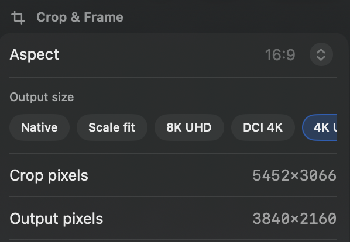
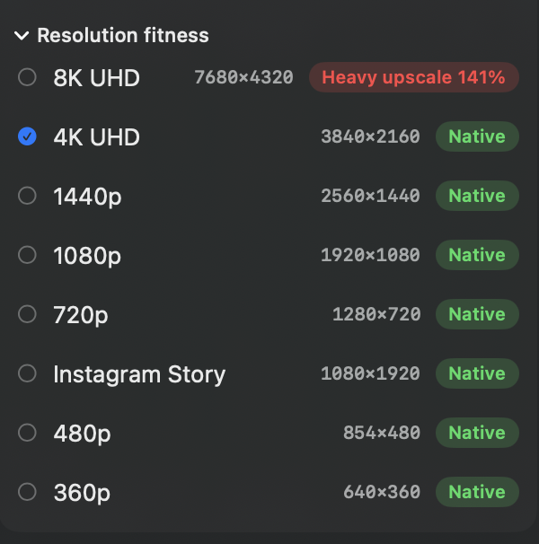
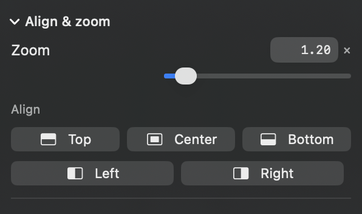
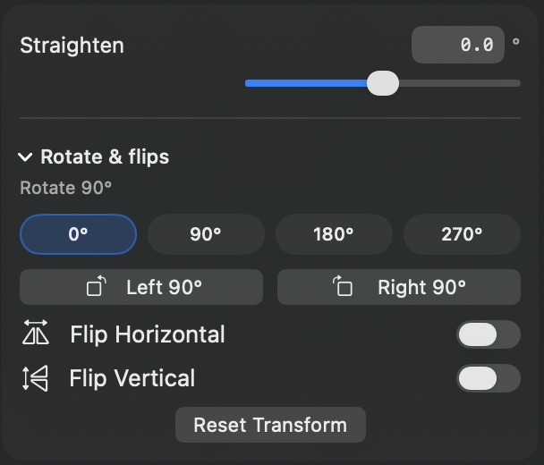
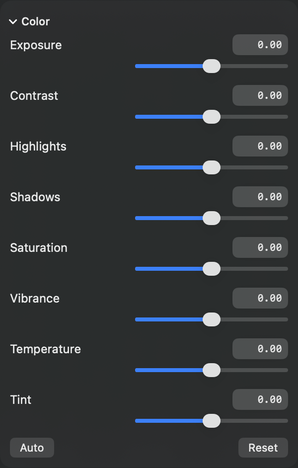
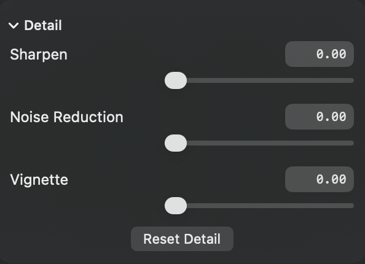
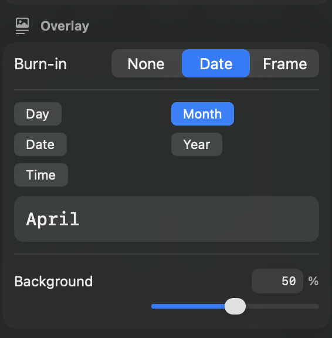
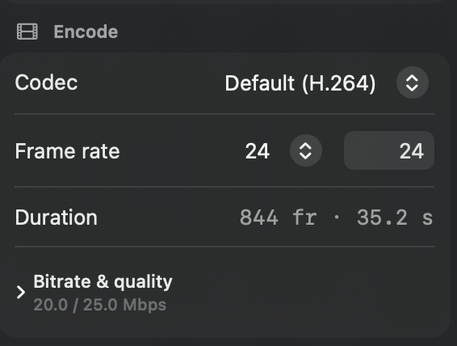

Version 1.1
The controls, up close
SISR keeps the everyday path short and tucks the precise tools one disclosure away. These are the inspector and sidebar controls you use to frame a still sequence, grade it, stamp a date, and encode — with a short how-to for each.


Right inspector
Crop & frame
Turn a camera still into a delivery frame without leaving the sequence. Aspect, output size, and the two pixel readouts stay in one section so you can see the crop you are taking and the picture you will encode.
How to use it
- Open Crop & Frame on the right.
- Set Aspect (16:9 in the shot) or pick an Output size chip. Preset sizes lock the crop to that frame.
- Native keeps the full photo at its own resolution. Scale fit shrinks the full frame to a max width or height and never crops or enlarges. Chips such as 4K UHD and DCI 4K crop to a fixed delivery size.
- Read Crop pixels (what you keep from the still) and Output pixels (what the file will be). Drag the rectangle in the viewer when you want to place it by hand.
Framing diagrams for Keep top, Center, and Keep bottom are on the crops page.

Right inspector
Resolution fitness
A green Native badge means the current crop already has the pixels for that size. A red Heavy upscale badge means the render would enlarge the crop to get there — fine for a draft, costly for a master. The list is the fastest way to pick a size your photos can actually support.
How to use it
- Expand Resolution fitness under Crop & Frame.
- Scan the sizes: 8K, 4K, 1440p, 1080p, 720p, Instagram Story, and the smaller presets. Each row shows the target pixels and a fitness badge.
- Click a row to apply that output size. In this example 4K UHD is Native, while 8K would upscale the crop by 141%.
- If the chosen size still needs enlargement, a warning appears above the list with the crop size and the scale.

Right inspector
Align & zoom
Punch in on a subject, then snap the frame to an edge. Useful for a horizon that should sit on the top or bottom third, or a build that belongs on the left of a 16:9 frame.
How to use it
- Expand Align & zoom.
- Drag Zoom from 1.00× to 4.00×, or type a value. 1.00× is the largest crop that still fills the aspect. Double-click the slider to return to 1.00×.
- Tap Top, Center, Bottom, Left, or Right to slide that crop against the matching edge of the photo. Center is the balanced default.

Right inspector
Straighten, rotate, and flip
Level a horizon, turn a camera that was shot on its side into a vertical video, or mirror a frame. Straighten is always visible. Quarter-turns and flips stay inside Rotate & flips until you need them.
How to use it
- Drag Straighten between −45° and 45°, or type the degrees. Double-click the slider to return to 0°. The viewer zooms just enough to keep the tilted crop filled.
- Expand Rotate & flips. The chips set 0°, 90°, 180°, or 270°. Left 90° and Right 90° step from wherever you are.
- Flip Horizontal and Flip Vertical mirror the frame. Reset Transform clears straighten, rotation, and both flips together.

Right inspector
Color
One grade for the whole sequence: exposure and contrast for the overall look, highlights and shadows for the ends of the tonal range, and white balance when a camera drifted warm or cool across the shoot. Every slider has a numeric field, so a look can be repeated exactly.
How to use it
- Expand Color.
- Exposure runs from −2 to +2 stops. Contrast, highlights, shadows, saturation, vibrance, temperature, and tint run from −1 to +1. Type a number or drag. Double-click a slider to zero it.
- Highlights and Shadows lift or hold the bright and dark ends without moving the whole frame. Vibrance pushes muted color first; Saturation pushes every color. Temperature and Tint set white balance.
- Auto applies a light starting grade (a little shadow lift, contrast, and vibrance). Reset returns every color slider to zero. The viewer updates as you move.

Right inspector
Detail
Finish the picture after the grade. Sharpen brings back edge detail in a scaled frame, noise reduction calms a high-ISO night frame, and vignette darkens the corners so the subject holds the frame. All three stay collapsed until you open them.
How to use it
- Expand Detail.
- Each slider runs from 0 to 1. Leave them at 0 when the photos are already clean. Double-click a slider to clear just that control.
- Reset Detail returns sharpen, noise reduction, and vignette to zero together.

Left sidebar
Date and frame burn-in
Stamp the capture date or a frame number into the picture — the usual ask for a build, a garden, or a trip. The badge is drawn inside the crop on the viewer, so placement and opacity match the file you render.
How to use it
- In the left sidebar, open Overlay.
- Set Burn-in to None, Date, or Frame.
- For a date, turn on the parts you want: Day (weekday), Month, Date (day of the month), Year, and Time. The sample line updates immediately — Month alone reads “April” when that is the frame’s month. Dates come from camera metadata when the file has it.
- For a frame number, choose From in point (1, 2, 3… inside the range you render) or Source numbers (the number in the filename).
- Background sets the badge fill from 0% to 100%. 50% is the default. The viewer preview and the encode use the same value.

Left sidebar
Encode
Pick the file type and the pace, then let the duration tell you how long the movie will be. Bitrate stays collapsed, with the automatic average and peak already shown, until you need an archive or a smaller social file.
How to use it
- Open Encode in the left sidebar.
- Codec defaults to H.264 (MP4). HEVC, ProRes, ProRes HQ, and GIF are in the same menu. ProRes writes a MOV; GIF writes a GIF.
- Set Frame rate with the stepper or by typing. Duration is the in/out frame count divided by that rate — 844 frames at 24 fps is 35.2 seconds.
- The Bitrate & quality summary is average / peak, sized for the output resolution (20 / 25 Mbps in the shot). Expand it to override either number or switch to a quality target. Leave it closed to keep the automatic rates.
Higher bitrates hold more detail and make a larger file. Automatic rates are chosen for common sizes such as 1080p and 4K.
Put a sequence together
Frame it, grade it, stamp it, then render. Deflicker for sun, cloud, and day-to-night lives on the home page, with the full control list in the user guide.